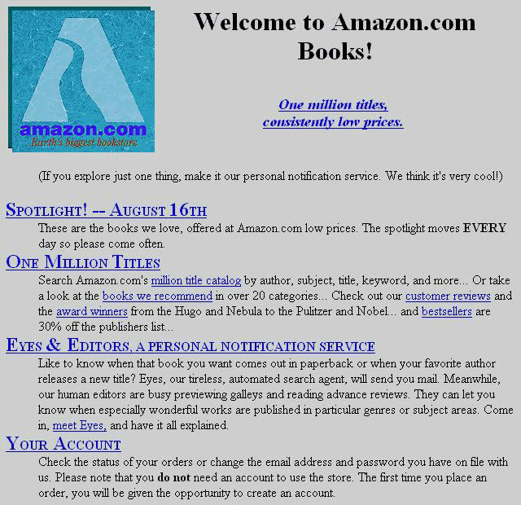
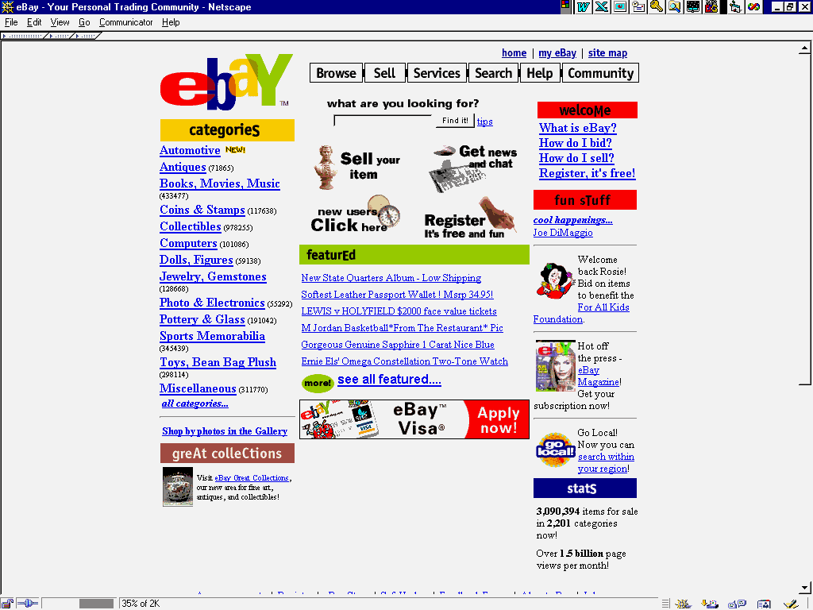
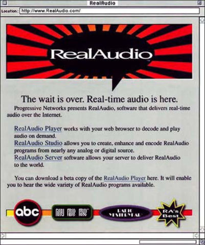
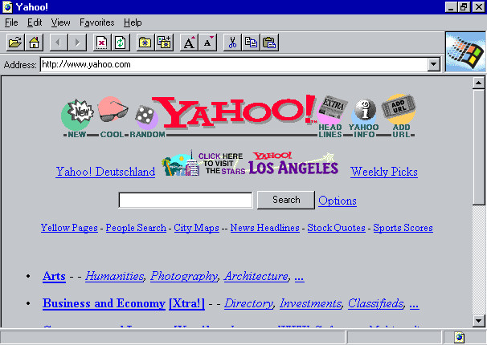
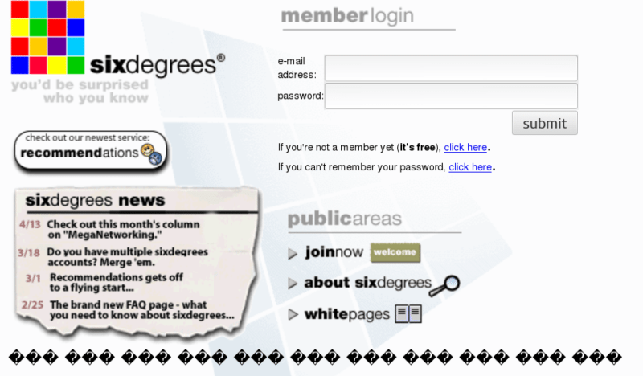
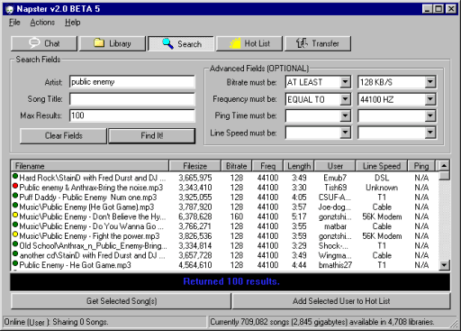
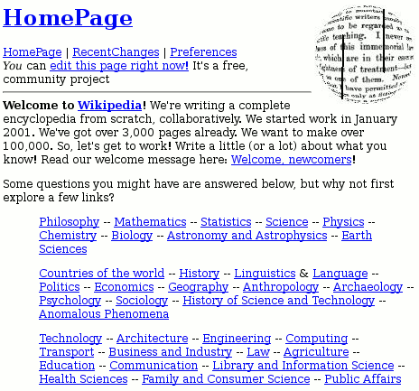
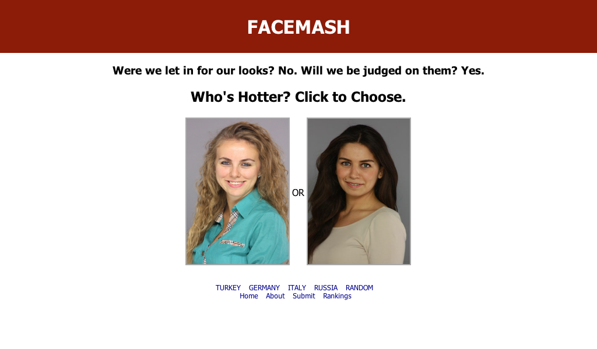

Fundamenten van het Internet
Geschiedenis
- Koude oorlog
- Gedecentraliseerd netwerk vs lineair netwerk (1957)
- Advanced Research Projects Agency - ARPA
- Pakketjes met uniek nummer en uniek adres
- 1968: Interface Message Processor (IMP) - Larry Roberts
ARPAnet
- Voorloper internet
- 1973: 37 netwerken
-
ARPA & Stanford = protocol (1974)
-
Transmission Control Protocol / Internet Protocol (TCP/IP)
Groei / ontwikkeling
-
Toepassingen
- Ontwikkeling van toepassingen:
-
Inloggen op een andere computer in het netwerk (telnet)
- Elektronische post (e-mail)
- Verzenden en ontvangen van software (BBS, FTP)
- Nieuwsgroepen
-
Groei
1983: 1000 hosts
1986: 5000 hosts
1987: 28000 hosts
1988: 60000 hosts
1989: 100000 hosts
Uitbreiding netwerken
-
Verschillende netwerken ontstaan tussen 1974 en 1989
-
MFEnet, SPAN, Usenet (NNTP), Bitnet, Csnet, Eunet, Nlnet,
Belnet
- 1983: GSM & OSI model
- 1986: DNS
- 1990: PDA
WWW
-
1989: Robert Cailliau (BE) en de Brit Tim Burners-Lee (EN) ontwerpen hypertextsysteem als toegang tot de
CERN-documentatie
-
1990: gestandaardiseerd hypertextsysteem - platform
onafhankelijk en linken tussen
verschillende bestanden
-
Projectnaam WorldWideWeb
Programmeertaal: Objective-C
webserver: NextCube
WWW 2
-
1991: code omgezet naar C (platformonafhankelijk en open-source)
-
1992: Mosaic, eerste grafische webbrowser genaamd door NCSA
-
1993: eerste zoekmachines
- Lycos
- 800000 webpagina geindexeerd in 1993
- 1994: Yahoo en Altavista populair
SSL-protocol en e-commerce
-
1994: Ontwikkeling van SSL protocol
-
1996: Eerste VoIP
1995
Amazon

eBay

RealAudio

Internet Explorer

1997: SixDegrees.com

1998: Google

2000: Napster

2001: Wikipedia

2004: Facemash

Verder verloop
- 2005: 8 miljard webpagina's geïndexeerd
- 2008: Doorbraak sociale netwerken: Netlog, Hyves en Facebook
- 2009: doorbraak smartphones
- 2010: doorbraak tablets
- 2014: 1000000000 websites online
En nu.
- 2016: informatieluchtbel en “Fake news”
- 2017: deepfakes
- 2018: meer dan de helft van de wereldbevolking actief op het internet
WWW
- World Wide Web (WWW of W3)
- informatieruimte voor documenten en andere web resources
-
unieke URI’s
-
hypertext links
-
webbrowsers en webapplicaties
Web 1.0
- Eerste ontwikkelfase
- 1989 tot 2004
- Read-only
- Content uit filesysteem vs database
- Frames en tables
WWW
- World Wide Web (WWW of W3)
- informatieruimte voor documenten en andere web resources
-
unieke URI’s
-
hypertext links
-
webbrowsers en webapplicaties
Web 1.0
- Eerste ontwikkelfase
- 1989 tot 2004
- Read-only
- Content uit filesysteem
- Frames en tables
Web 1.0
- Server Side Includes als scriptingtaal
- Common Gateway Interface (CGI)
- Dynamisch gegevens opvragen aan webserver
- bv. in perl, Python of Ruby
- Later door bv. ColdFusion, Personal HomePage (PHP), Active
ServerPages (ASP) en Java ServerPages (JSP)
De DOM en dynamische HTML-revolutie
- DHTML = combinatie van HTML, CSS en client-side scripts
- Document Object Model (DOM) als structuur
- Content dynamisch via asynch. JS en XML => AJAX
Web 2.0
- Participatief Web of Social Web
- 2004 tot nu
- user-generated content
- rijke gebruikerservaring
- Social media
- Rich Web Applications
- Gepersonaliseerde reclame -> gebruiker als product
Web 2.0
- Functionaliteit Development
- XML, RSS, Atom, JSON ...
- Web Services: SOAP, WSDL ....
- API’s: REST, RESTfull, GraphQL ...
- Extensies
- Evolutie in webstandaarden
- Frameworks en nieuwe talen
- Cloud Application Development en Platformen: IAAS, PAAS, SAAS, ...
Web 3.0
- Gedecentraliseerd ecosysteem
- Betrouwbaarder, veiliger, opener, autonomer
- Baas over eigen data
- Op maat gemaakte browse-ervaringen
- Communicatie machines en gebruikers
- Semanctic web en AI
- IoT
- AR en VR
- Human-Computer interactie (HCI)
- Overal